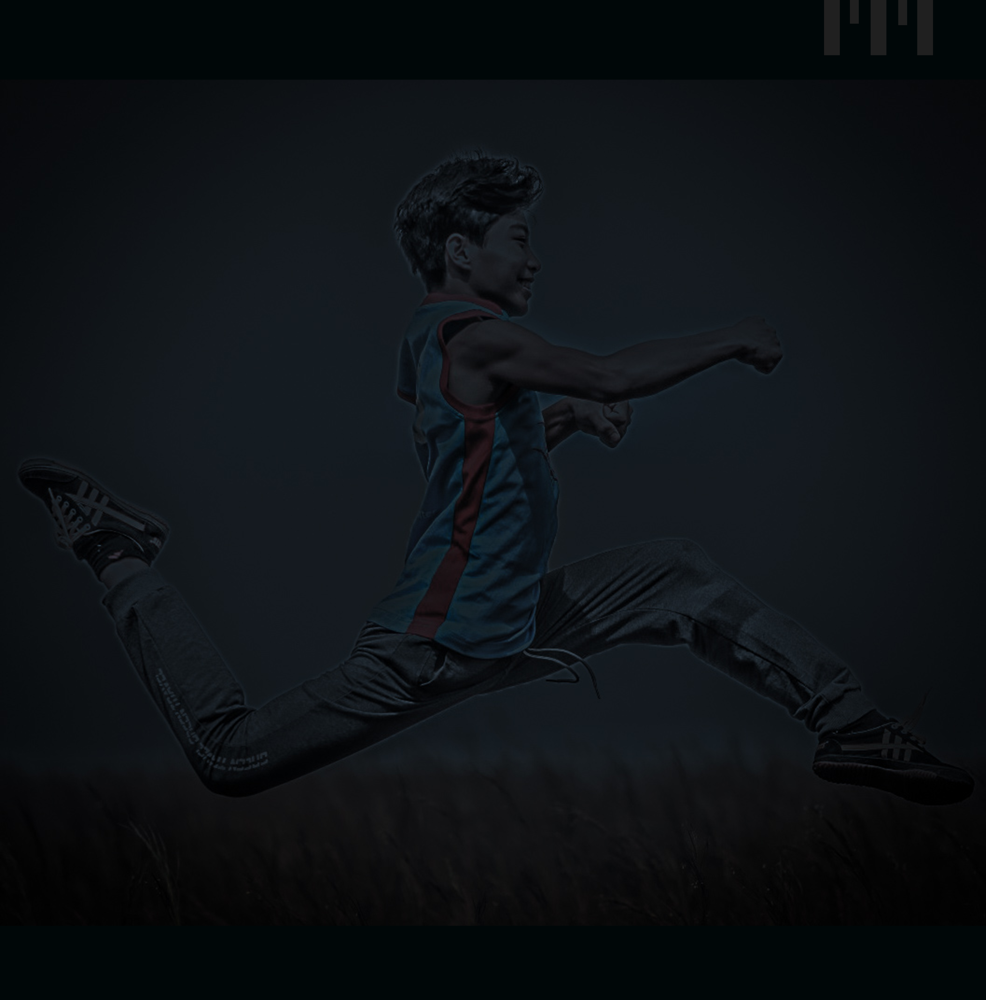
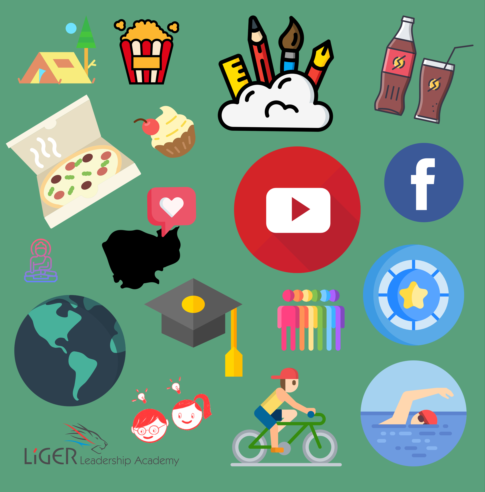

I was born on Friday 1, June 2004. I was an ordinary boy who grew up in Kampong Cham province in Cambodia but currently I study at Liger Leadership Academy in Phnom Phen.
Before Liger, I used to study in Government school. The environment and the way that people respect each other are completely different. I wish all students in Cambodia treat people the same way as they want others to treat them. “Discrimination and bully shouldn’t allow in school”.
I am so proud to born as a Cambodian.
15 years that I saw this world. A lot of experiences that I have been through are challenging. Most of the time I like to do gymnastics, inspired by Sofie Dossi. I really love to do Yoga or Gymnastic but sadly, I don’t have a tutor to teach me. Art is another part of me that already set in me. A huge accomplishment so far are, I got to design the Geography Book cover; plenty of my arts were at government school hanging on the wall. Last, I love to play frisbee, it is my only sport that I can play well beside others.

I’m just a simple boy who really enjoys painting different types of art in free time. Often, I spend my personal hour with paper and doing sport that inspires me. Sometimes, I love to go on social media such as Facebook, Instagram, YouTube, but I don’t play online games. Most of the weekend day evening after homework, it is pool time for me to relax from the screen. For my favorite foods such as Pizza, Khmer desserts, sweet palm juice, cold water, and other Khmer soups. “Last I don’t like to eat any soups with Bean and I don’t like porridge”
